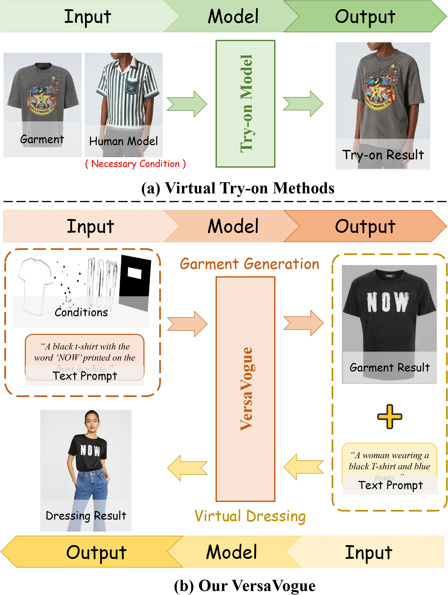
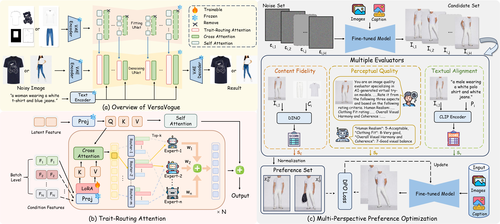
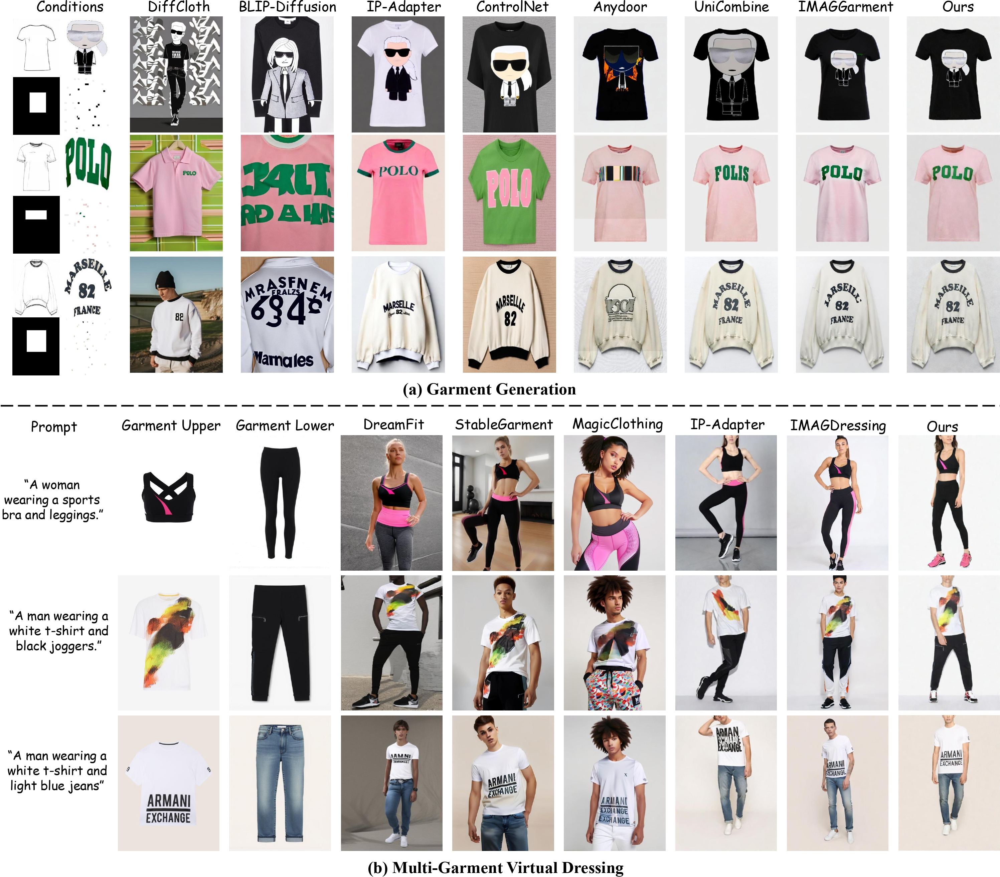
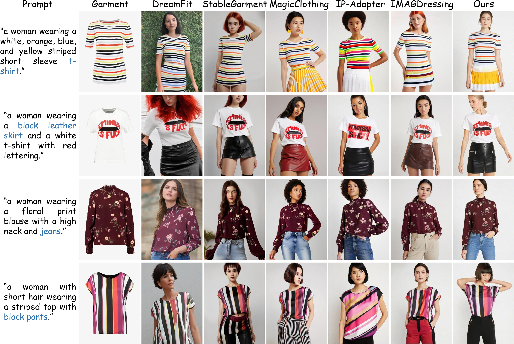
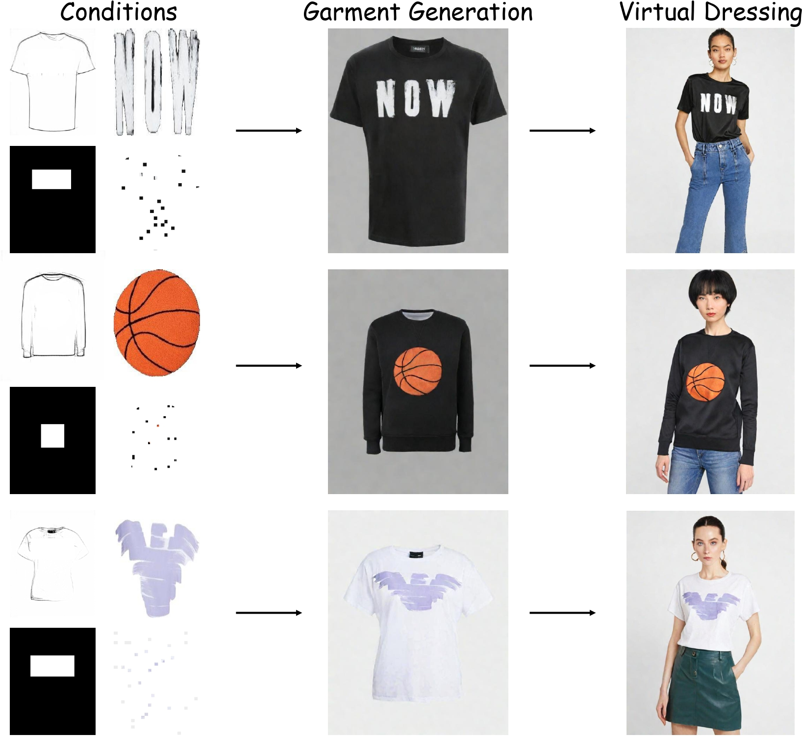

Diffusion models have driven remarkable advancements in fashion image generation, yet prior works usually treat garment generation and virtual dressing as separate problems, limiting their flexibility in real-world fashion workflows. Moreover, fashion image synthesis under multi-source heterogeneous conditions remains challenging, as existing methods typically rely on simple feature concatenation or static layer-wise injection, which often causes attribute entanglement and semantic interference. To address these issues, we propose VersaVogue, a unified framework for multi-condition controllable fashion synthesis that jointly supports garment generation and virtual dressing, corresponding to the design and showcase stages of the fashion lifecycle. Specifically, we introduce a trait-routing attention (TA) module that leverages a mixture-of-experts mechanism to dynamically route condition features to the most compatible experts and generative layers, enabling disentangled injection of visual attributes such as texture, shape, and color. To further improve realism and controllability, we develop an automated multi-perspective preference optimization (MPO) pipeline that constructs preference data without human annotation or task-specific reward models. By combining evaluators of content fidelity, textual alignment, and perceptual quality, MPO identifies reliable preference pairs, which are then used to optimize the model via direct preference optimization (DPO). Extensive experiments on both garment generation and virtual dressing benchmarks demonstrate that VersaVogue consistently outperforms existing methods in visual fidelity, semantic consistency, and fine-grained controllability.


To achieve high-fidelity and controllable fashion synthesis, we propose two key modules: trait-routing attention (TA) and multi-perspective preference optimization (MPO). The trait-routing attention module leverages a mixture-of-experts framework to orchestrate autonomous layer-wise alignment. Specifically, it initiates dense interactions between visual conditions and latent embeddings via cross-attention, where the multi-expert mechanism dynamically distills the most compatible attribute features for each SDXL layer. This process establishes precise semantic guidance for the corresponding hierarchy. Furthermore, we implement a dual-phase training strategy to optimize the model. Following an initial MSE-based phase that establishes a robust generative foundation, we introduce multi-perspective preference optimization to elevate perceptual fidelity. This involves performing stochastic sampling to populate a diverse candidate set, which is then rigorously audited by our multi-evaluator system. By discerning superior and inferior instances, we formulate a high-quality preference dataset to strictly align the model's policy with human aesthetics via the DPO loss.



@article{yu2026versavogue,
title={VersaVogue: Visual Expert Orchestration and Preference Alignment for Unified Fashion Synthesis},
author={Yu, Jian and Shen, Fei and Wang, Cong and Xin, Yi and Shen, Si and Du, Xiaoyu and Tang, Jinhui},
journal={arXiv preprint arXiv:2604.07210},
year={2026}
}